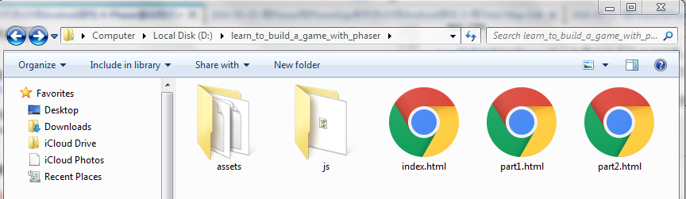
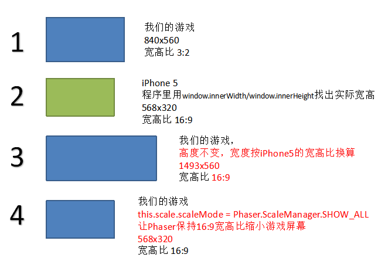
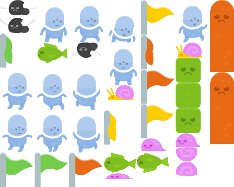
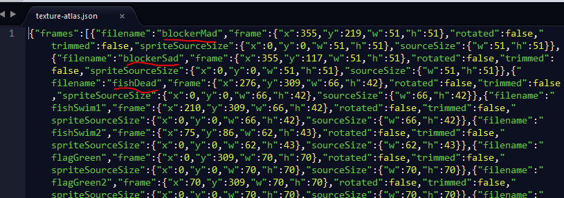

上一篇博客我们用Tiled这个工具来生成了游戏场景。今天终于要开始写代码了，我们将开始使用Phaser把游戏场景文件（tiles.png, level.json）读出来，显示在手机上。
下面用到的所有图片和代码都可以在我的GitHub找到。
目标
- 用Phaser把游戏场景显示在手机浏览器上
准备工作
在写代码前，需要准备的东西：
- Windows PC
- 在Windows PC上安装
Chrome浏览器用来模拟手机。
安装Python不是因为要写Python代码。Phaser工程其实就是一个网站，所以在调试程序的时候需要一个HTTP Server才能把Phaser工程跑起来。Python内置的SimpleHTTPServer非常好用，零配置，推荐用它。
你可以用任何文本编辑器写代码，我用的是Sublime Text。
Phaser工程的目录结构
请先到我的GitHub下载源代码，下面的讲解将基于这个源代码。
Phaser工程的主目录如下：

part1.html, part2.html- 游戏的HTML网页。为了简化我把JavaScript代码写在HTML文件里了。每个HTML文件都是本教程的一个阶段性MVP(Minimum Viable Product)，可以用来运行和展示。随着教程的进行，还会增加part3.html、part4.html等等index.html- 现在还用不到它。等整个教程结束，我会做一次重构，把part1.html/part2.html/…的JavaScript代码提取出来放入js目录，剩下的真正的HTML的内容放入index.htmljs目录- 所有的JavaScript文件assets目录- 图片，tile map文件，声音
Phaser工程的代码结构
现在打开文件learn_to_build_a_game_with_phaser/part1.html，我们来看看代码，这是一个很常见的HTML5网页:
1 |
|
第8行引入了Phaser的库文件，就一个文件phaser.min.js，那就是Phaser所有的东西啦，够简单吧？
和Phaser相关的全部代码都放在<body></body>之间。我用两个<script></script>来放两段不同功能的JavaScript代码。这样有点啰嗦，不过好处是看起来清晰，而且最后重构的时候代码很容易分模块。
初始化Phaser的Game对象
先来看23行-32行。这几行是程序的入口，类似C语言的main函数。
第29行初始化了Phaser的Game对象。
1 | var game = new Phaser.Game(newWidth, targetHeight, Phaser.AUTO); |
Game()函数的第三个参数指定Phaser用什么Web技术来画游戏的界面。Phaser支持HTML Canvas或者WebGL两种方式。Canvas几乎所有的手机浏览器都支持；WebGL动画性能更好，不过有些浏览器不支持。AUTO模式让Phaser自己决定用前面两种方式中的一种。
Game()函数的前两个参数指定游戏界面的宽和高。我们的游戏界面为840X560，由于各种手机的屏幕宽高比不一样，第27行根据手机浏览器实际宽window.innerWidth高window.innerHeight比算出了游戏界面的新的宽newWidth，游戏的高targetHeight保持560px不变。
1 | var targetWidth = 840; |
根据手机实际宽高比重新计算游戏的宽高非常重要，如果不这样做，你的游戏在不同的手机屏幕上显示就会失真（图形拉伸，或者被压缩变形）。
第30行，用game.state加载了一个叫做Play的State。加载只是把State放入内存中，第31行start()才真正让这个State运行起来。
1 | game.state.add('Play', Play); |
那什么是State呢？下面我们详细讲讲State这个很有用的概念。
Phaser的State对象
Phaser的State可以被翻译成状态机里的状态。State是个很有用的概念。
在写代码的时候，有面向对象编程经验的人都会想到把把代码封装成类（Class）：主菜单界面一个类，游戏实际的运行一个类，游戏结果的显示（You Win! You Loose!）一个类。要让这些类的对象相互访问，而且能访问Phaser的实时信息，你恐怕得多做一些公共代码的工作。而Phaser的State对象帮你把这些都实现了：
- 状态的加载
game.state.add() - 状态的运行/转换
game.state.start() - 直接在状态对象里用
this.xxx的方式访问Phaser的核心对象：game,input,camera,sound,physics, 等等
如何才能生成一个State对象呢？代码第14-20行定义了一个叫做Play的State对象，及其它的原型框架。
1 | var Play = function () {}; |
很简单，State就是一个函数对象，它有几个约定的方法可以在State的原型(prototype)里实现:
preloadPhaser会在游戏初始化阶段调用它，一般我们用它来加载游戏资源(assets)。如：图片、声音等等createpreload被调用结束后，Phaser会调用create。我们一般在这个方法里把内存里的图片放置到游戏界面里，设置好Player和enemyupdate每秒钟这个update会被Phaser调很多次，所以所有游戏精灵们之间的互动都在这里处理。比如：Player跳跃，Player撞到Enemy，等等
通常，一个Phaser游戏工程里会写多个State对象，比如：Load state用来把图片、sprite sheet、声音加载到内存，同时显示一个逐渐变长的progress bar。Menu state用来显示游戏的主菜单，让玩家选关或者设置。Play state用来运行游戏逻辑。End state用来显示You Win! You Loose!之类的东西。
为了简化，我们就一个Play state。
Play.preload方法
现在打开文件learn_to_build_a_game_with_phaser/part2.html，我们来看看preload()方法里面写了些什么。
1 | var Play = function () {}; |
第1行，声明了Play state函数对象。
第5行，设置了本游戏界面的缩放模式scaleMode为Phaser.ScaleManager.SHOW_ALL。
第6-7行是让游戏界面居中显示。
第9-11行，把游戏需要的图片和tile map资源加载到内存。
短短十来行代码，我花了近10天才搞清楚了要这样写。为什么呢？因为这里牵涉了Phaser游戏开发的三个知识点：
- 手机屏幕适配
- Tile Map
- Texture Atlas
下面详细讲讲这三个知识点。
手机屏幕适配
一个游戏当然要在各种手机的屏幕上都显示正常，要不然别人怎么会玩你的游戏？这个要求很正常，不过分吧？
答案是：太过分了。
鉴于现在手机厂家多如牛马，每个厂家几个月就出一款长相奇特的新机，要做到一个游戏适配所有手机屏幕基本是没戏。我也是花了差不多一个星期才搞清楚了应该怎么做：太复杂了，别妄想了，干脆就用最简单的方法适配大部分手机就好。
下图就是本游戏做手机屏幕适配的方法：

统共分4步:
- 给游戏预设一个界面大小840x560，所以宽高比为3:2
- 游戏代码里动态获得手机实际的宽高比（宽：window.innerWidth，高：window.innerHeight）。比如iPhone5，宽高568x320,宽高比16:9
- 修正预设的大小，高度不变560，高度按16:9换算成1493。现在我们的游戏有新的界面大小：1493x560，宽高比16:9
- 虽然宽高比我们和iPhone5一致了，但1493x560比568x320大很多啊。没有关系，用Phaser的缩放模式
this.scale.scaleMode = Phaser.ScaleManager.SHOW_ALL把1493x560保持宽高比的缩小，直到能放入iPhone5的屏幕里。
看似简单的4步，我花了5个晚上的时间google加看帮助才理清了这样是可行的。
Tile map
Tile map的概念在上一个博客已经讲过了。
Tile map包括两部分：一个是包含所有小tile图片的大图片tile.png，另一个是描述哪种小tile图片应该放在哪个小格子的描述文件level.json。我们需要用下面的this.load.tilemap()和this.load.image()方法把这两个资源加载到内存。
这两个函数很类似，第一个参数是给被加载的资源取个名字。以后再访问这个资源用这个名字就好了。第二个参数是资源的文件名。
1 | this.load.tilemap('tilemap', 'assets/level.json', null, Phaser.Tilemap.TILED_JSON); |
Texture Atlas
Tile Map用的tile.png图片是sprite sheet，它把大小一样的小tile图片全部放入了一个大图片文件tile.png中了。
能不能把大小不一样的图片也像sprite sheet那样放到一个大图片文件里来提高性能？可以，就是用Texture Atlas方式。
Texture Atlas类似Tile Map也包括两部分：一个当然是那个大图片文件，在本游戏就是texture-atlas.png；另一个就是用来描述哪个小图片放入了texture-atlas.png的描述文件texture-atlas.json。texture-atlas.json里面包含了每个小图片的名字，我们后面将用这些名字来访问texture-atlas.png里的各个小图片。
下图就是texture-atlas.png:

下图是texture-atlas.json的内容，每个filename后面跟着的就是小图片的名字。

用如下代码就可以把Texture Atlas加载到内存：
1 | this.load.atlas('texture-atlas', 'assets/texture-atlas.png', 'assets/texture-atlas.json') |
第一个参数是给Texture Atlas资源取的一个名字。第二个参数是大图片文件名。第三个参数是json文件名。
休息一下
这篇博客我们讲了Phaser工程的大概样子，并详细讲了Play.preload()方法及其屏幕适配等，下一个博客我们接着讲Play.create()。